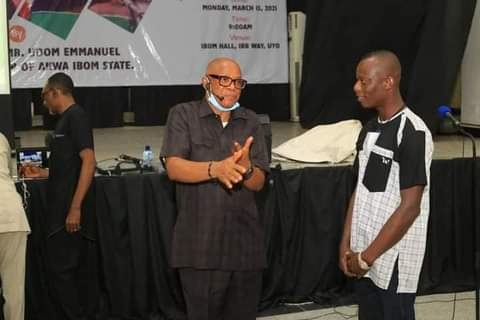

Picture Talk
Workshop on Business class

It is without doubt that Oil and Gas is one of the major resources in AKwa Ibom and Nigeria at large. It would therefore be a shame not to have Akwa Ibomites that can work in relevant industries to process their own resource. Thus, the need for the State government through Ministry of Trade and Commerce to train Akwa Ibomites to work in relevant industries.
The participants in the Oil and Gas sector where sponsored by the State Government to have an all inclusive camping in Mkpat Enin local Government Area. From feeding, housing, medicals and every needs and wants of each individual was provided and catered for by the State Government. From the camp ground, the participants where taken outside the camp for field work where and when neccesary.
Workshop on Business class